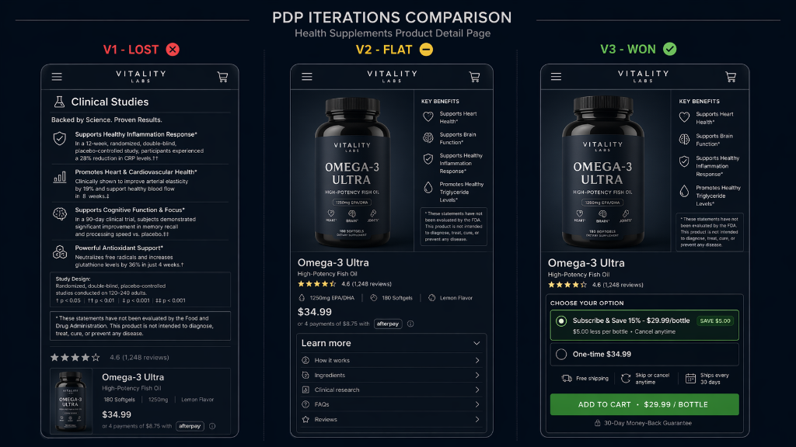

Three PDPs in Eight Weeks
A direct-to-consumer health supplements brand running on BigCommerce with an aging theme. The brand wanted a data-driven Product Detail Page (PDP) redesign and was willing to commit to iterative testing rather than a one-shot launch. That commitment is the entire case. The first redesign lost. The second was flat. The third won. The program existed only because the team didn\'t declare it dead at iteration one — and iteration one\'s loss contained the exact insight that made iteration three\'s win possible.
The Foundation Nobody Tests
Before any variant shipped, the BigCommerce theme itself needed an upgrade. The legacy theme didn\'t support clean per-section injection — every variant would have accumulated engineering debt across tests, making each successive iteration slower and messier to build.
Two foundation steps, neither glamorous, both prerequisite:
- Theme upgrade. BigCommerce theme refactored to support modular PDP sections that could be swapped by variant without touching global templates.
- Tracking architecture. PDP event schema standardized:
view_item,add_to_cart,begin_checkout, and custom section-level events (ingredient_explorer_open,dosage_calculator_use,subscription_toggle). Every variant could be read at the section level, not just at the page level.
The Iteration Arc
Three iterations, three different hypotheses, three different outcomes:
Iteration One — The Informed Guess
Iteration 1 \u00b7 Lost
Iteration Two — The Partial Recovery
Iteration 2 \u00b7 Flat
Iteration Three — The Win
Iteration 3 \u00b7 Won
subscription_toggle event — tracked from day one on the foundation schema — confirmed the sub-section causing the lift. Without section-level tracking, the win would have been "v3 works." With it, the win was "v3 works because of the subscription selector."
The Learning Chain
What each iteration taught the next. This is the structure that a one-shot redesign cannot produce:
How information compounded across iterations
Results
Note on numbers: Per-test CVR, AOV, and subscription take-rate deltas are available under NDA. Specific confidence intervals and absolute metric deltas can be shared with employers under appropriate confidentiality.
Tools & Stack
What This Engagement Taught Me
- The first redesign of a complex page is an educated guess, not a solution. Brands that commit to iterative testing on the same surface — with each iteration informed by what the previous one actually taught — will outperform brands that ship one redesign and call it done. Iteration is the strategy, not the backup plan.
- Losses are informationally positive when the program continues. Iteration one\'s loss produced the exact learning that made iteration three\'s win possible. If the team had declared the program dead at iteration one, none of the subsequent revenue would have existed. The structural commitment to continue was worth more than any single variant.
- Flat results contain insight too. Iteration two didn\'t move the primary metric but it surfaced the downstream friction (the subscription selector) that iteration three then addressed. A test reading flat is a test that eliminated one hypothesis and pointed at the next.
- Section-level tracking is invisible until it isn\'t. The foundation work — instrumenting every sub-section of the PDP before any variant shipped — looked like overhead during iteration one. By iteration three it was the difference between "something worked" and "the subscription selector specifically worked, and here is why." That attribution fidelity becomes the basis for the next engagement\'s starting hypothesis.
- Theme infrastructure is test infrastructure. Upgrading the BigCommerce theme before the first variant shipped felt like engineering ceremony. By iteration three it was the reason each successive variant shipped faster than the last. Programs that try to test on legacy themes accumulate engineering debt per iteration and burn out within 3\u20134 tests.